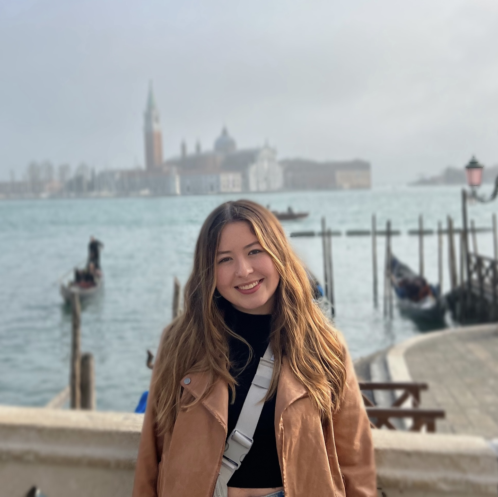

Home Page
Kylie Brown
GW Student Studying Journalism & Mass Communications

Hello! My name is Kylie Brown and I am a current undergraduate student and journalist at George Washington University’s competitive School of Media & Public Affairs. I have coursework and experience involving reporting, writing on deadline, story pitching, data analysis, graphic design, research and social media. I have built these skills since my time in high school while serving as an editor for my school newspaper and continue to expand my skill set through several newsroom experiences. Currently, I write for a women-ran magazine called HER Campus where I pitch creative story ideas that revolve all around the idea of women’s empowerment. I also have worked on stories for GW Hatchet and GW Democrats as a writer for their News & Blog Committee.
Since a young age, I have always been passionate about writing and story-telling, especially when telling the story of those who don’t always have the opportunity to have their voice heard. I thrive in verbal and written communication with others. In high school, I found the role of a journalist to fit me like a glove as I got to learn people’s stories and have the privilege and responsibility of retelling them to a larger audience. Some of my favorite stories I have been able to write throughout my time at GW have been around the Latinx community, a beat I covered for one of my classes. My favorite story I recently wrote was about Afro-Latinos and their journey to feel accepted in the Latinx community. Stories like these will always hold a special place in my heart as I feel a civic duty to accurately and gracefully tell the unique stories of those around me.
It is important to me that I continue to push myself outside my comfort zone and seek opportunities that allow me to challenge myself and learn new skills. I’m actively seeking further newsroom or public relations experience that utilizes and leverages my diverse skillset.
Explore my work:
My Resume
My GitHub
My County Census Analysis
My Paper
My News Story
Contact Me
(720) 606 - 3360 / kbrown86@gwmail.gwu.edu